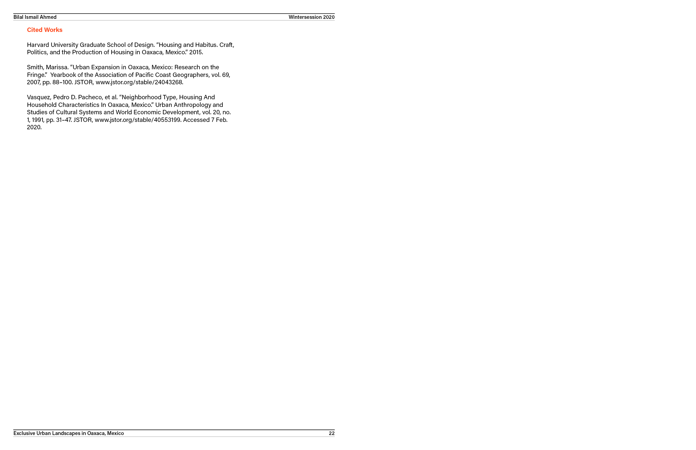

EXCLUSIONARY HOUSING IN OAXACA, MEXICO
RHODE ISLAND SCHOOL OF DESIGN
INDEPENDENT RESEARCH PROJECT
PROFESSOR EMANUEL ADMASSU
JANUARY-FEBRUARY 2020
This project was a self-initiated month-long investigation on systems of societal exclusion in Oaxaca de Juarez and its surroudning areas. I began by understanding migration patterns and city block typologies in the Oaxaca area. Using these, and backed by essays and studies, I was able to design a prototype for inclusive housing systems.


